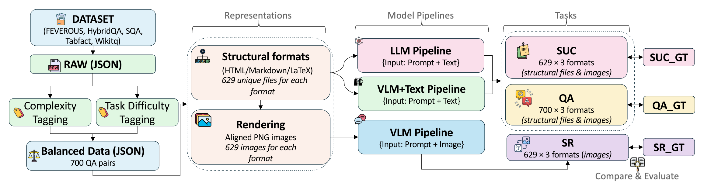
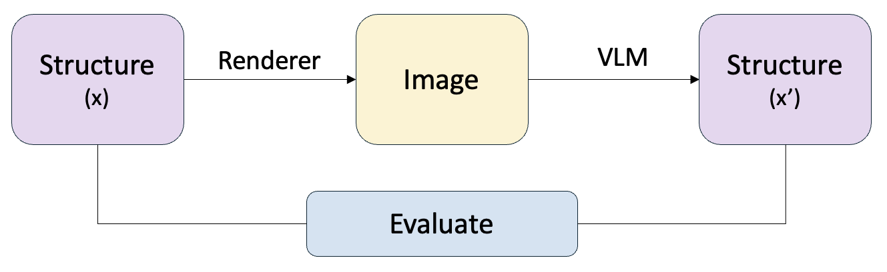
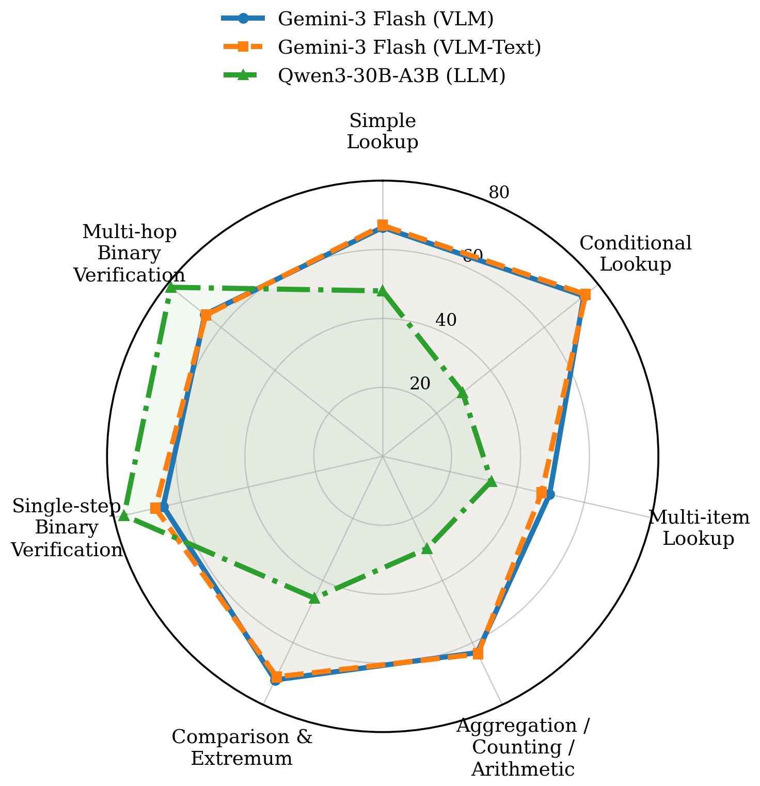
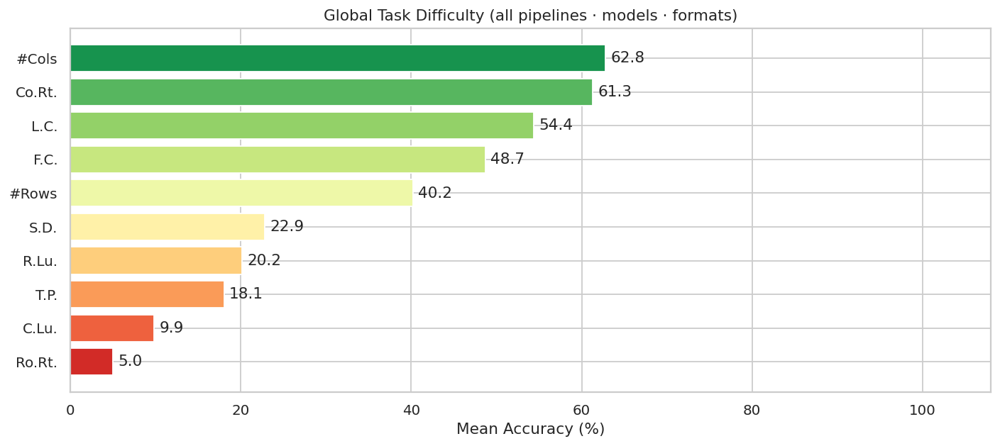
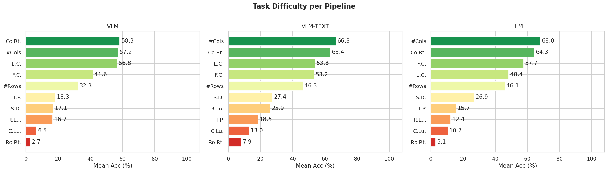

Large Language Models (LLMs) and Vision-Language Models (VLMs) are increasingly evaluated on table reasoning tasks, but the role of table representation remains under-explored. In practice, the same table content may appear in different structural formats — such as HTML, Markdown, and LaTeX — or as rendered images. However, existing evaluations often let content, format, layout, and modality vary together, making it difficult to isolate representation effects. We introduce TABVERSE, a controlled multimodal table benchmark that aligns the same table content across multiple structural formats and rendered images, with question category and difficulty tags. This design enables systematic evaluation of representation effects while holding table content fixed. We evaluate LLMs and VLMs across three tasks: Question Answering (QA), Structural Understanding Capability (SUC), and Structure Reconstruction (SR). Our results show that representation choice substantially affects table understanding. Models generally perform better with structured text than with rendered images, but the size of this gap depends on the task, model, and format. HTML is often the most robust text format, while row-sensitive structural tasks and syntactically usable LaTeX reconstruction remain challenging.
Benchmark Overview & Pipeline
TABVERSE is constructed from held-out splits of five TableQA datasets. Each table is converted into three structural formats (HTML, Markdown, LaTeX) and rendered into aligned PNG images. The benchmark supports three tasks across text and image modalities, enabling controlled comparison while table content remains fixed.

Figure 1. TABVERSE pipeline: five source datasets → three structural formats + rendered images → three evaluation tasks (QA, SUC, SR) across LLM, VLM-Image, and VLM-Text pipelines. The balanced evaluation set contains 700 question–table pairs (350 Easy, 350 Hard) from 629 unique tables.
Dataset at a Glance
700
Balanced Eval. Set
6,097
Full Tagged Pool
3
Formats + Images
17
Models Evaluated
Source Datasets
FEVEROUS (dev)794 pairs
HybridQA (dev)1,608 pairs
TabFact (test)1,695 pairs
SQA (test)1,000 pairs
WikiTableQuestions1,000 pairs
Total tagged pool6,097 pairs · 4,434 tables
Balanced Evaluation Set
700
Q–Table pairs
629
Unique tables
7
Q categories
· 350 Easy + 350 Hard questions, 50 per category per difficulty
· Difficulty estimated from zero-shot VLM performance on rendered images
· Category tags assigned by Gemini-3-Flash + manual review
Supported Tasks
TABVERSE supports three complementary tasks that probe different aspects of table understanding under controlled representation variation.
🔍 Question Answering
QA
Given a question and table (structured text or image), the model predicts an answer. Evaluated via exact-match accuracy. Covers 7 question categories from lookup to multi-hop verification.
700 × 3 formats · Exact-match accuracy
📐 Structural Understanding
SUC
10 structure-oriented probes including boundary detection, size estimation, coordinate lookup, and row/column retrieval. Tests structural awareness independent of content.
629 × 3 formats · 10 subtasks
🔧 Structure Reconstruction
SR
Given a rendered table image, reconstruct the table in HTML, Markdown, or LaTeX. Evaluated via GriTS-Topology, GriTS-Content, and syntactic usability (parse/compile success).
629 × 3 images → 3 target formats
SR Evaluation Pipeline

Figure 2. Structure Reconstruction pipeline. A ground-truth table x is rendered into an image via three format-specific renderers. A VLM reconstructs the table as x′, which is then compared against x using GriTS topology and content metrics, plus syntactic usability checks.
Key Findings
📊
Representation substantially affects performance
Structured text often outperforms rendered images, especially for structure-sensitive tasks. The gap depends on the model family — Gemma-3 benefits most from text inputs (+7–10 pp), while InternVL3.5 and SmolVLM2 perform similarly or better on images.
🏆
HTML is the safest text format
Across QA and SUC, HTML is consistently the most robust structural-text format. LaTeX and Markdown can be less stable for some models, particularly for coordinate-based tasks. Rendered-image results show smaller and less consistent format differences.
🔬
Row tasks remain the hardest SUC challenge
Column counting and retrieval are the easiest SUC subtasks (>60% mean accuracy). Row retrieval (5.0%) and cell lookup (9.9%) are extremely hard across all pipelines. Models are better at global column structure than precise row-level or coordinate-based indexing.
⚡
LaTeX reconstruction is the SR bottleneck
Strong VLMs reliably recover table topology from images but struggle with exact cell content and compilable LaTeX syntax. Usability scores for HTML/Markdown targets are near-perfect for strong models, while LaTeX usability can drop to 0.77 even for top models.
QA Results
Gemini-3-Flash-Preview achieves the highest scores across all formats and modalities, followed by GPT-5.2. Among open-weight VLMs, Qwen3-VL-8B is the strongest under strict exact match, while Qwen3-30B-A3B leads text-only LLMs. Symbolic table format affects text-based reasoning more strongly than rendered-image reasoning — text pipelines show larger format gaps than image pipelines.
Figure 3. QA exact-match accuracy averaged over HTML, LaTeX, and Markdown representations. Blue bars = VLM-Image pipeline; yellow/green bars = text pipeline. Proprietary models lead, but open VLMs Qwen3-VL-8B and InternVL3.5 are competitive.

Figure 4. Category-wise QA accuracy for the strongest model from each pipeline (Gemini-3-Flash VLM, Gemini-3-Flash VLM-Text, Qwen3-30B-A3B LLM). Verification questions are easiest; Multi-item Lookup and Aggregation/Arithmetic are hardest.
Modality Gap Analysis
The chart below shows Δ = VLM-Text avg − VLM-Image avg, averaged over HTML, LaTeX, and Markdown. Positive values indicate that structured text helps more than rendered images; negative values indicate that images help more. The direction of this gap is strongly model-dependent — no single modality dominates across all architectures.
Figure 5. QA modality gap per model. Δ accuracy (pp) = VLM-Text avg − VLM avg, averaged over HTML/LaTeX/Markdown. Gemma-3 models and TableLLaVA benefit from text inputs; InternVL3.5, SmolVLM2, and Ministral perform better on images.
Text-favoring models (+Δ)
Gemma-3 models show the largest text advantage (+7 to +10 pp), likely reflecting strong instruction-following from structured markup. TableLLaVA shows +24.4 pp but starts from a very low image baseline.
Image-favoring models (−Δ)
InternVL3.5, LLaVA-1.6, Ministral-3, and SmolVLM2 all perform better on rendered images. SmolVLM2 shows the largest image advantage (−9.8 pp), suggesting these models parse visual layout more reliably than long structured-text inputs.
Near-zero gap
Gemini-3-Flash-Preview stays near zero (Δ = +0.1), showing stable performance across both modalities — consistent with its top overall accuracy across all formats and pipelines.
Structural Understanding Capability (SUC)
SUC results reveal a clear difficulty hierarchy: column-oriented subtasks are easy while row-level and coordinate-based tasks are very hard. Structured text input generally improves SUC over rendered images, especially for row-boundary and header-sensitive tasks. Header and indexing conventions strongly affect scores — using an explicit prompt (stating 0-indexed coordinates, excluding headers) improves index-dependent subtask performance by up to +94.8 pp.

Figure 6. Global SUC task difficulty averaged over all models, pipelines, and formats. Column counting (#Cols: 62.8%) and column retrieval (Co.Rt.: 61.3%) are the easiest; cell lookup (C.Lu.: 9.9%) and row retrieval (Ro.Rt.: 5.0%) are the hardest.

Figure 7. SUC task difficulty per pipeline (VLM / VLM-TEXT / LLM). Structured text inputs consistently improve scores over images for row-sensitive subtasks. Row retrieval and cell lookup remain the main bottlenecks across all three pipelines.
Structure Reconstruction (SR)
Strong VLMs such as Qwen3-VL, InternVL3.5, and GPT-5.2 recover table topology reliably (GriTS-Topology > 0.98), but content preservation and compilable LaTeX generation remain challenging. GriTS-Topology is consistently higher than GriTS-Content — models recover broad table layout better than exact cell text. LaTeX usability is the main bottleneck, ranging from near-zero (LLaVA variants) to 0.77–0.95 for stronger open models.
SR Usability — Fraction of syntactically valid outputs (HTML image input)
Model
HTML target
Markdown target
LaTeX target
GPT-5.2
0.99
1.00
0.94
Gemma-3-27B
1.00
1.00
0.89
Qwen3-VL-30B-A3B
1.00
1.00
0.77
Gemini-3-Flash
0.06
0.99
0.76
InternVL3.5-14B
1.00
1.00
0.91
LLaVA-1.6-13B
0.99
0.90
0.00
Values are fractions of syntactically usable outputs (HTML parse success / Markdown render success / LaTeX compilation success) from HTML image renders.
Contributions
Controlled evaluation formulation — we formulate cross-format and cross-modality table understanding as a controlled problem where table content is fixed while structural format and input modality vary under matched pipelines.
TABVERSE benchmark — aligned multimodal table benchmark with HTML, LaTeX, and Markdown representations, corresponding rendered images, category and difficulty tags, and a 700-sample balanced evaluation set from five TableQA sources.
Three complementary tasks — QA, SUC (10 structural subtasks), and SR (reconstruction + usability) across LLM-Text, VLM-Image, and VLM-Text pipelines on 17 models.
Representation insights — HTML is often the most robust text format; modality effects are model-dependent; LaTeX reconstruction and row-level understanding remain hard challenges even for proprietary models.
Citation
If you find TABVERSE useful in your research, please cite:
@article{tabverse2026,
title = {{TABVERSE}: Benchmarking Cross-Format Table Understanding in {LLMs} and {VLMs}},
author = {Anonymous},
journal = {arXiv preprint},
year = {2026},
url = {http://anonymous.for.review}
}
 Paper
Paper
 Code
Code
 Dataset
Dataset